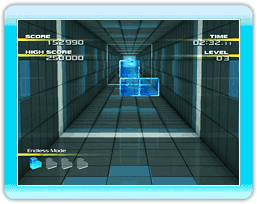
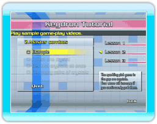

10 |
Selecting the Game Mode |
 |
|
● Mode-Selection Screen 
・Normal 
・Endless 
・Trick Challenge 
・Keydron Tutorial *A lesson may not be available until you complete the lesson above it. If you opted to skip the tutorial when starting the game for the first time, all the lessons will be available. *The example in Lesson 2 and Lesson 3 shows a sample of play only. You cannot control the keydron while watching the lesson.
・Keydron Memories *Once data is deleted, it can’t be retrieved, so please be careful.
● Mode-Settings Screen
*As the game progresses, the number of keydrons, backgrounds, stages, and levels you can choose from increases. |
 |
 |